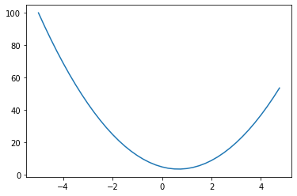
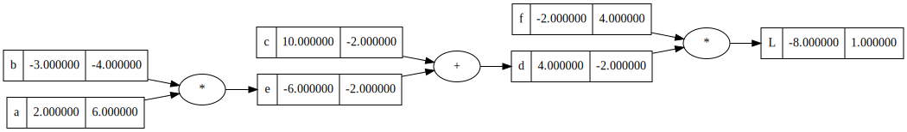
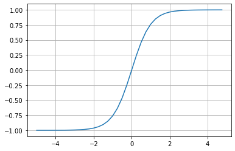
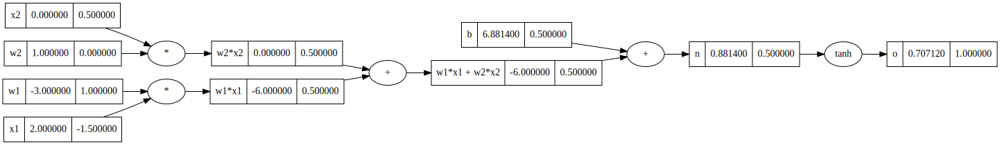
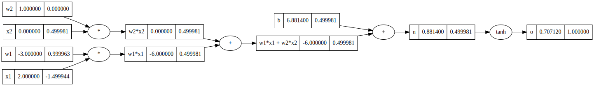
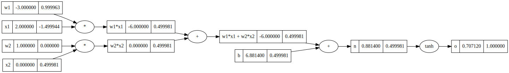
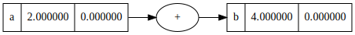
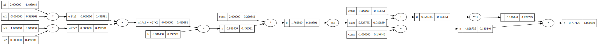
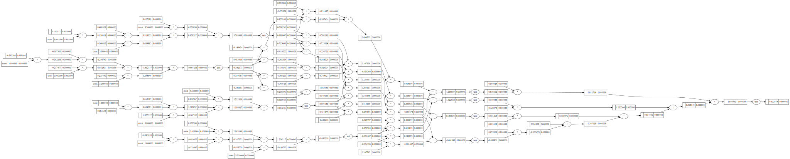
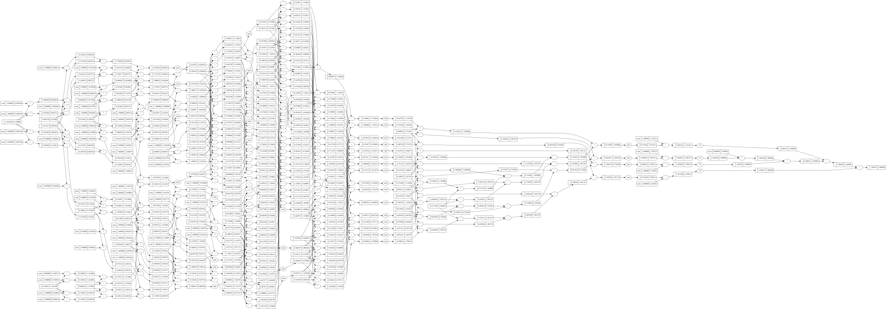

import math
import random
import numpy as np
import matplotlib.pyplot as pltdef f(x):
return 3*x**2 - 4*x + 5xs = np.arange(-5, 5, 0.25)
ys = f(xs)
plt.plot(xs, ys)
h = 0.000000001
x = -3.0
print(f"Gradient at {x} is {(f(x+h) - f(x))/h}")Gradient at -3.0 is -22.000001820288162class Value:
def __init__(self, data, _children=(), _op='', label=''):
self.data = data
self.grad = 0.0
self._backward = lambda: None
self._prev = set(_children)
self._op = _op
self.label = label
def __repr__(self):
return f"Value(data={self.data})"
def __add__(self, other):
other = other if isinstance(other, Value) else Value(other, label='const')
out = Value(self.data + other.data, (self, other), '+')
def _backward():
self.grad += 1.0 * out.grad
other.grad += 1.0 * out.grad
out._backward = _backward
return out
def __radd__(self, other):
return self + other
def __mul__(self, other):
other = other if isinstance(other, Value) else Value(other, label='const')
out = Value(self.data * other.data, (self, other), '*')
def _backward():
self.grad += other.data * out.grad
other.grad += self.data * out.grad
out._backward = _backward
return out
def __rmul__(self, other):
return self * other
def __neg__(self):
return self * -1
def __sub__(self, other):
return self + (-other)
def __rsub__(self, other):
return self - other
def __pow__(self, other):
assert isinstance(other, (int, float)), "Only supporting int/float powers for now"
out = Value(self.data**other, (self,), f'**{other}')
def _backward():
self.grad += (other * self.data**(other-1)) * out.grad
out._backward = _backward
return out
def __truediv__(self, other):
return self * other**-1
def tanh(self):
x = self.data
t = (math.exp(2*x)-1)/(math.exp(2*x)+1)
out = Value(t, (self,), 'tanh')
def _backward():
self.grad += (1 - t**2) * out.grad
out._backward = _backward
return out
def exp(self):
out = Value(math.exp(self.data), (self, ), 'exp')
def _backward():
self.grad += out.data * out.grad
out._backward = _backward
return out
def backward(self):
order = list()
visited = set()
def topological_sort(node):
visited.add(node)
for child in node._prev:
if child not in visited:
topological_sort(child)
order.append(node)
topological_sort(self)
self.grad = 1.0
for node in reversed(order):
node._backward()
Engine
a = Value(2.0, label='a')
b = Value(-3.0, label='b')
c = Value(10.0, label='c')
e = a*b; e.label = 'e'
d = e + c; d.label = 'd'
f = Value(-2.0, label='f')
L = f * d; L.label = 'L'from graphviz import Digraph
def get_graph_elements(start):
nodes, edges = set(), set()
def build(node):
if node not in nodes:
nodes.add(node)
for child in node._prev:
edges.add((child, node))
build(child)
build(start)
return nodes, edges
def draw_dot(start):
nodes, edges = get_graph_elements(start)
dot = Digraph(format='svg', graph_attr={'rankdir': 'LR'})
for node in nodes:
dot.node(str(id(node)), label="{ %s | %f | %f }"%(node.label, node.data, node.grad), shape='record')
if node._op:
dot.node(str(id(node))+node._op, label=node._op)
dot.edge(str(id(node))+node._op, str(id(node)))
for n1, n2 in edges:
dot.edge(str(id(n1)), str(id(n2))+n2._op)
return dotdraw_dot(L)def manual():
h = 0.00001
a = Value(2.0, label='a')
b = Value(-3.0, label='b')
c = Value(10.0, label='c')
e = a*b; e.label = 'e'
d = e + c; d.label = 'd'
f = Value(-2.0, label='f')
L = f * d; L.label = 'L'
L1 = L.data
a = Value(2.0, label='a')
b = Value(-3.0, label='b')
b.data += h
c = Value(10.0, label='c')
e = a*b; e.label = 'e'
d = e + c; d.label = 'd'
f = Value(-2.0, label='f')
L = f * d; L.label = 'L'
L2 = L.data
print((L2 - L1)/h)
manual()-4.000000000026205L.grad = 1.0
d.grad = -2.0
f.grad = 4.0
e.grad = -2.0
c.grad = -2.0
b.grad = -4.0
a.grad = 6.0draw_dot(L)
f.data += 0.01 * f.grad
c.data += 0.01 * c.grad
b.data += 0.01 * b.grad
a.data += 0.01 * a.grade = a*b; e.label = 'e'
d = e + c; d.label = 'd'
L = f * d; L.label = 'L'draw_dot(L)xs = np.arange(-5, 5, 0.25)
ys = np.tanh(xs)
plt.plot(xs, ys); plt.grid()
x1 = Value(2.0, label='x1')
x2 = Value(0.0, label='x2')
w1 = Value(-3.0, label='w1')
w2 = Value(1.0, label='w2')
b = Value(6.8814, label='b')
w1x1 = w1*x1; w1x1.label = 'w1*x1'
w2x2 = w2*x2; w2x2.label = 'w2*x2'
w1x1w2x2 = w1x1 + w2x2; w1x1w2x2.label = 'w1*x1 + w2*x2'
n = w1x1w2x2 + b; n.label = 'n'
o = n.tanh(); o.label = 'o'draw_dot(o)o.grad = 1.0
n.grad = 0.5
w1x1w2x2.grad = 0.5
b.grad = 0.5
w1x1.grad = 0.5
w2x2.grad = 0.5
w1.grad = 1.0
w2.grad = 0.0
x1.grad = -1.5
x2.grad = 0.5draw_dot(o)
o.grad = 1.0
o._backward()
n._backward()
w1x1w2x2._backward()
w1x1._backward()
w2x2._backward()draw_dot(o)
o.grad = 1.0
order = list()
visited = set()
def topological_sort(node):
visited.add(node)
for child in node._prev:
if child not in visited:
topological_sort(child)
order.append(node)
topological_sort(o)
for node in reversed(order):
node._backward()draw_dot(o)
a = Value(2, label='a')
b = a + a; b.label = 'b'
draw_dot(b)
b.backward()
draw_dot(b)x1 = Value(2.0, label='x1')
x2 = Value(0.0, label='x2')
w1 = Value(-3.0, label='w1')
w2 = Value(1.0, label='w2')
b = Value(6.8814, label='b')
w1x1 = w1*x1; w1x1.label = 'w1*x1'
w2x2 = w2*x2; w2x2.label = 'w2*x2'
w1x1w2x2 = w1x1 + w2x2; w1x1w2x2.label = 'w1*x1 + w2*x2'
p = w1x1w2x2 + b; p.label = 'p'
q = 2 * p; q.label = 'q'
expq = q.exp(); expq.label = 'expq'
n = expq - 1; n.label = 'n'
d = expq + 1; d.label = 'd'
o = n/d; o.label = 'o'draw_dot(o)o.backward()
draw_dot(o)
import torchx1 = torch.tensor(2.0, requires_grad=True)
w1 = torch.tensor(-3.0, requires_grad=True)
x2 = torch.tensor(0.0, requires_grad=True)
w2 = torch.tensor(1.0, requires_grad=True)
b = torch.tensor(6.881400, requires_grad=True)
n = w1*x1 + w2*x2 + b
n.retain_grad()
o = torch.tanh(n)
o.retain_grad()o.backward()print("Gradient of x1 : %f"%x1.grad.item())
print("Gradient of w1 : %f"%w1.grad.item())
print("Gradient of x2 : %f"%x2.grad.item())
print("Gradient of w2 : %f"%w2.grad.item())Gradient of x1 : -1.499944
Gradient of w1 : 0.999962
Gradient of x2 : 0.499981
Gradient of w2 : 0.000000Module
class Neuron:
def __init__(self, nin):
self.w = [Value(random.uniform(-1, 1)) for _ in range(nin)]
self.b = Value(random.uniform(-1, 1))
def __call__(self, x):
act = sum([i*j for i,j in zip(self.w, x)], self.b)
out = act.tanh()
return out
def parameters(self):
return self.w + [self.b]
class Layer:
def __init__(self, nin, nout):
self.neurons = [Neuron(nin) for _ in range(nout)]
def __call__(self, x):
out = [neuron(x) for neuron in self.neurons]
return out[0] if len(out) == 1 else out
def parameters(self):
return [p for neuron in self.neurons for p in neuron.parameters()]
class MLP:
def __init__(self, nin, nout):
sz = [nin] + nout
self.layers = [Layer(sz[i], sz[i+1]) for i in range(len(nout))]
def __call__(self, x):
for layer in self.layers:
x = layer(x)
return x
def parameters(self):
return [p for layer in self.layers for p in layer.parameters()]
nn = MLP(3, [4, 4, 1])x = [1.0, 3.0, 5.5]
out = nn(x); outValue(data=-0.44895619664539943)draw_dot(out)
xs = [[1.0, 3.0, -1.0, 2.0],
[-1.0, 0.5, 1.0, 6.0],
[3.0, 1.5, -1.0, 2.5],
[-1.0, 7.0, 3.0, 3.0]]
ys = [1.0, -1.0, 1.0, -1.0]
ypred = [nn(x) for x in xs]
loss = sum([(ygt - yout)**2 for ygt, yout in zip(ys, ypred)])
lossValue(data=4.20749604459977)loss.backward()draw_dot(loss)
for p in nn.parameters():
p.data += -0.01 * p.gradypred = [nn(x) for x in xs]
loss = sum([(ygt - yout)**2 for ygt, yout in zip(ys, ypred)])
lossValue(data=2.9193346577538652)for k in range(20):
ypred = [nn(x) for x in xs]
loss = sum([(ygt - yout)**2 for ygt, yout in zip(ys, ypred)])
for p in nn.parameters():
p.grad = 0.0
loss.backward()
for p in nn.parameters():
p.data += -0.1 * p.grad
print(k, loss.data)0 0.0014922142820839803
1 0.0014833382897962229
2 0.0014745626442129246
3 0.0014658856860760914
4 0.0014573057921043581
5 0.0014488213740302153
6 0.0014404308776678261
7 0.0014321327820102311
8 0.0014239255983551145
9 0.00141580786945779
10 0.001407778168710639
11 0.001399835099347932
12 0.0013919772936751614
13 0.0013842034123220607
14 0.0013765121435183587
15 0.0013689022023915809
16 0.0013613723302860572
17 0.001353921294102395
18 0.0013465478856567504
19 0.0013392509210591414ypred[Value(data=0.980749071290304),
Value(data=-0.9942829799936868),
Value(data=0.9824558766125259),
Value(data=-0.9749366386594727)]